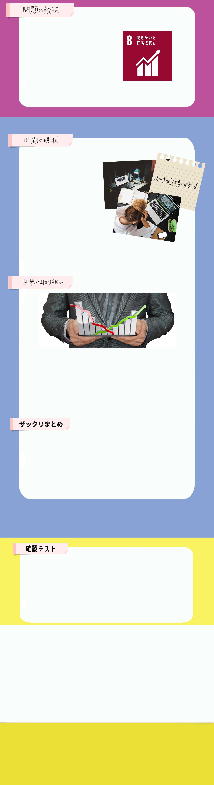
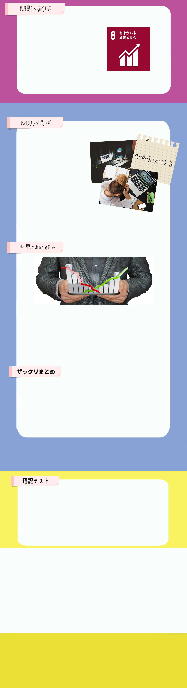

SDGs17の目標の「働きがいも経済成長も」では、世界の人々が経済的に豊かに暮らせることや、
働きがいのある人間らしい仕事を増やすことを目標としています。
しかし、世界の最も貧しい
国では、5歳から17歳までの子供の4人に1人が、労働を強いられています。
経済活動は生きていく上で必要不可欠なものであり、賃金を得なければ生きていけません。 また経済の成長・発展は就業している人々なしには成り立たず、産業の多様多様とは、幅広く性質の異なる群が存在すること。性質に類似性のある群が形成される点が特徴で、単純に「いろいろある」こととは異なる。化やより生産性の高い産業の拡大が必要不可欠となってきます。 そういった中で問題になるのが、就業する人々の収入や労働環境です。 地域や環境によっては収入や健康、教育、就業機会などで著しく不利な立場に置かれてしまい、正当な収入を得られない、正規雇用をしてもらえないなどの不利益を得ることも少なくありません。
現在、世界では5人に1人の若者が、教育や職業訓練を受けられず、仕事にもつけない状態です。中央 ・南アジアや、北アフリカ・西アジアでは4人に1人と、とても深刻な状況です。それだけでなくあるデー タでは世界の失業者の数は、15歳～24歳の若者が全体の35％を占めていると言われています。
コカ・コーラ社が実施している制度です。この制度は全てのメンバーがトレーニングを受けることの
出来る環境を提供し、参加者が生活力に自信をつけ、自分の将来を構築できるようにすることを目的
としています。
実際に多くの参加者がこの制度の恩恵を受けており、若者の将来のための力となっています。
世界の失業者の数は、15歳～24歳の若者が全体の %を占めていると言われている。
※穴埋め箇所をクリックすると正解表示